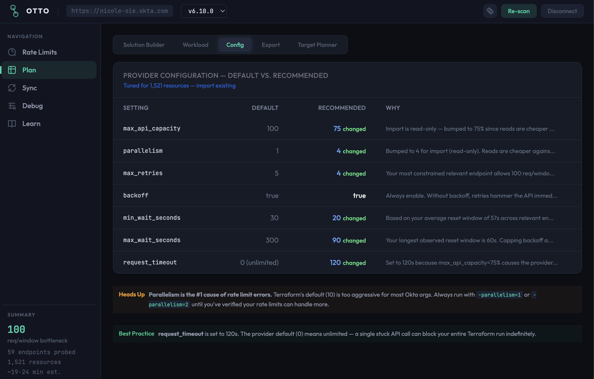
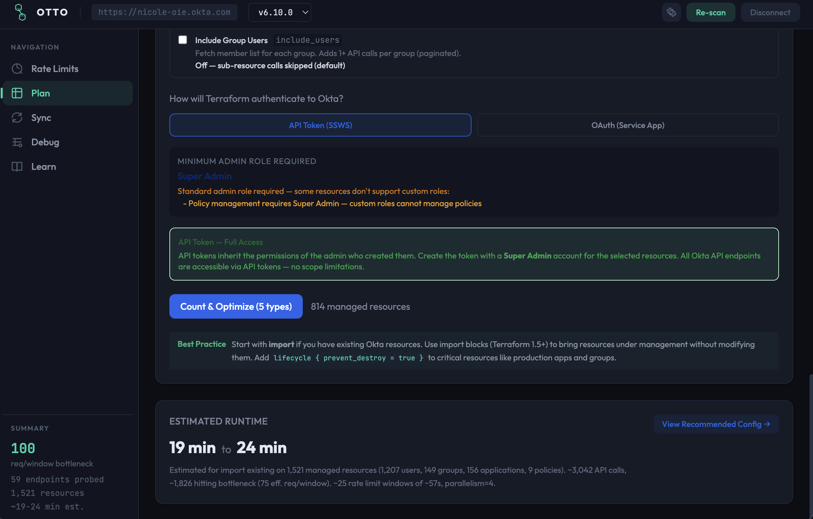

The complete toolkit for managing Okta with Terraform —
from rate limits to cross-org sync, powered by AI.
Customers hit the same walls every time they try to operationalize Okta with Terraform.
No visibility into which API endpoint is the bottleneck. Terraform hits Okta limits mid-run and fails silently.
dev → staging → prod means every Group ID, Policy ID, Auth Server ID is different. Manual substitution is error-prone and slow.
Thousands of lines of TF_LOG=DEBUG output with no easy way to find the actual root cause of a failure.
30+ Okta resource types, complex provider settings, import blocks — customers spend hours just getting started.
| Tab | What it does | Who it helps |
|---|---|---|
| ⏱ Rate Limits | Live-probe 30+ Okta API endpoints, identify your bottleneck, generate optimized provider.tf | Anyone running terraform apply against Okta |
| 📐 Plan | AI solution builder, workload sizing, config comparison, export scaffold, target runtime planner | Teams setting up Okta Terraform for the first time |
| 🔄 Sync | Cross-org comparison, field-level diff, AI ID conversion, in-app terraform apply | Teams promoting config across environments |
| 🐛 Debug | Okta error decoder + TF_LOG analyzer with AI root cause analysis | Anyone troubleshooting a failed Terraform run |
| 📚 Learn | Built-in guidance on rate limits, tuning, best practices | New Okta Terraform users |
Live-probe 30+ endpoints. Find the bottleneck. Generate optimized provider.tf.
max_retries = 10 · backoff = true
request_timeout = 45 · max_api_capacity = 90

Describe your use case in plain English. AI generates a complete Terraform project.
Solution Builder · Workload Sizing
Provider version management

Connect source + target → Compare → Convert → Apply. Let me show you.
Paste any Okta API error → AI-powered explanation + exact fix.
Upload debug output → per-endpoint stats, rate-limit hits, root cause analysis.
OpenAI, Azure OpenAI, Bedrock — teams bring their own enterprise-approved LLM.
Company SSO via SAML/OIDC with MFA enforcement and audit trail.
OTTO gets its own non-human identity — scoped delegation, full audit trail, least-privilege via OAuth.
Rate limits probed. Config generated. Environments synced.
Failures debugged. All in one app.